Weekly intelligence brief / W38–39
双周 AI
进展观察
从模型降价到 Agent 基础设施：运行成本、可验证反馈与可信交付成为两周内反复出现的主线。
2026.09.13 — 09.26
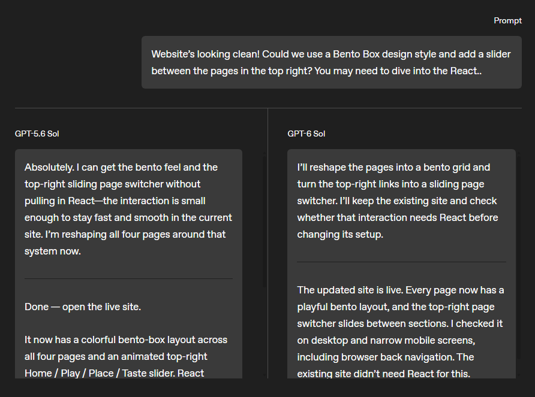
OpenAI 报道：工作流示例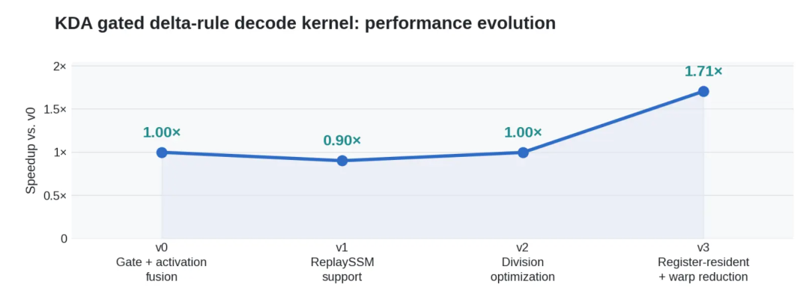
智谱报道：Kernel 调优方向键翻页 · 点击图片放大 · E 编辑 · F 全屏 · O 总览
文字可暂存浏览器；编辑后点“导出独立 HTML”，即可分享含图片的单文件。
Executive scan / 2 weeks
三条线索串起这两周
01 / MODEL ECONOMICS
性能开始按任务成本比较
OpenAI 推出 Sol / Luna 两档，Anthropic 强调 Opus 5.5 的任务效率。看点从单次跑分转向完成率、耗时和总花费。
02 / AGENT INFRA
训练和部署都需要运行时
DeepSeek 的 DSec、智谱的 Infra Agent 与千问手机方案，分别触及沙箱、推理服务和跨应用执行。
03 / VERIFIED FEEDBACK
能验证，才可能持续改进
Jev 将高频判断变成结构化输出；VBVR-Pro 提供可验证任务反馈；SearchGEO 暴露外部证据污染风险。
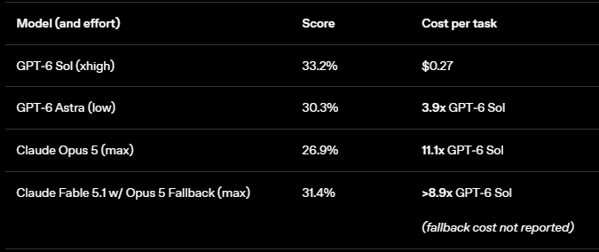
OpenAI 报道配图：AutomationBench 分数与任务成本。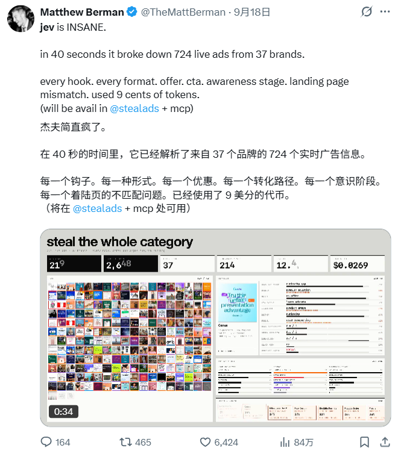
机器之心 Jev 报道配图：724 条广告的批量判断开发者案例。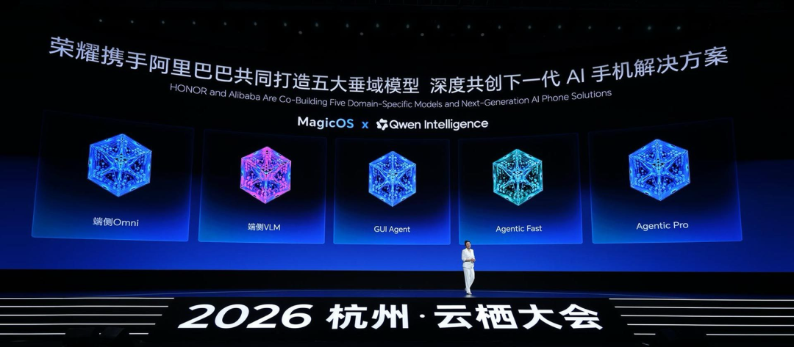
千问报道配图：手机 Agent 发布现场。共同问题：系统能否把更多尝试，稳定地转化为可核验、可交付的结果？
阅读路径先看产品与价格，再看支撑 Agent 扩展的工程，最后检查反馈与可信度。
DeepSeek DSec · VBVR-Pro · Jev 报道 · RSIAgent；产品价格按所引发布报道。
Frontier companies / scan
前沿公司：从旗舰竞赛转向可用的产品梯队
01
OPENAI媒体报道 GPT-6 Sol / Luna 承接专业任务与高频轻量任务；同一套能力以不同成本进入工作流。02
ANTHROPICOpus 5.5 报道同时强调代码迁移、网页优化与更低典型任务成本；案例尚需可重复评测。03
GOOGLEMagenta RealTime 2 被报道为实时音乐生成进展；本期将其作为媒体信号，不据此推断普遍创作质量。04
META个人 Agent 的长期状态与字节模型蒸馏成为研究议题；持久记忆与训练单位都在被重新设计。2 档Sol / Luna 产品梯队
39/40Opus 5.5 单项网页任务 · 报道
实时音乐生成体验方向
长期个人 Agent 状态问题
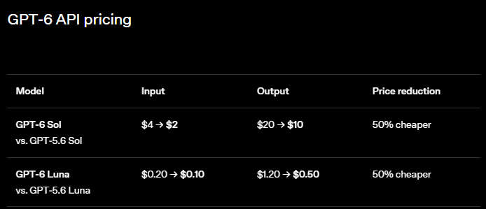
OpenAI 报道配图：Sol / Luna 价格表。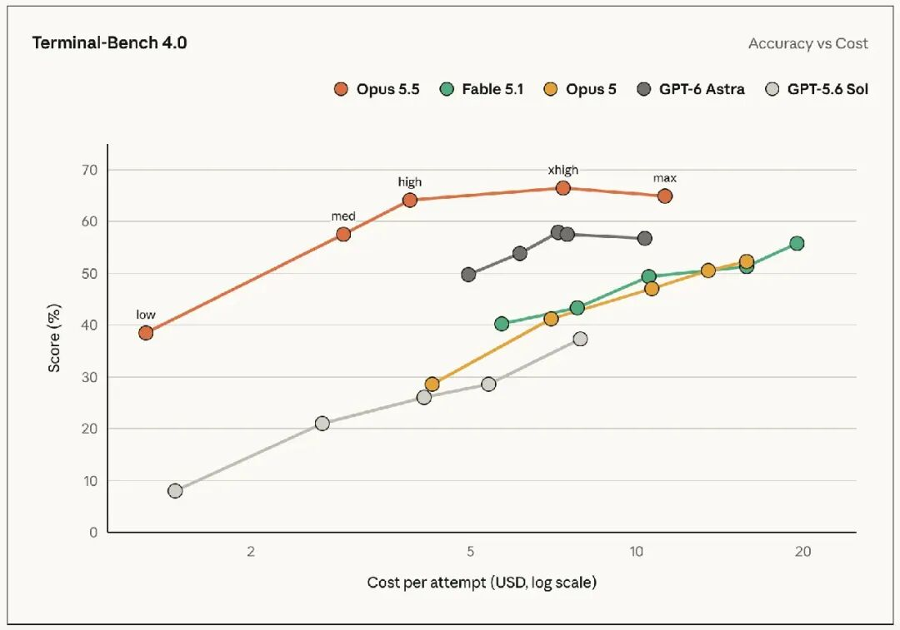
Anthropic 报道配图：Terminal Bench 4.0 成本与准确率。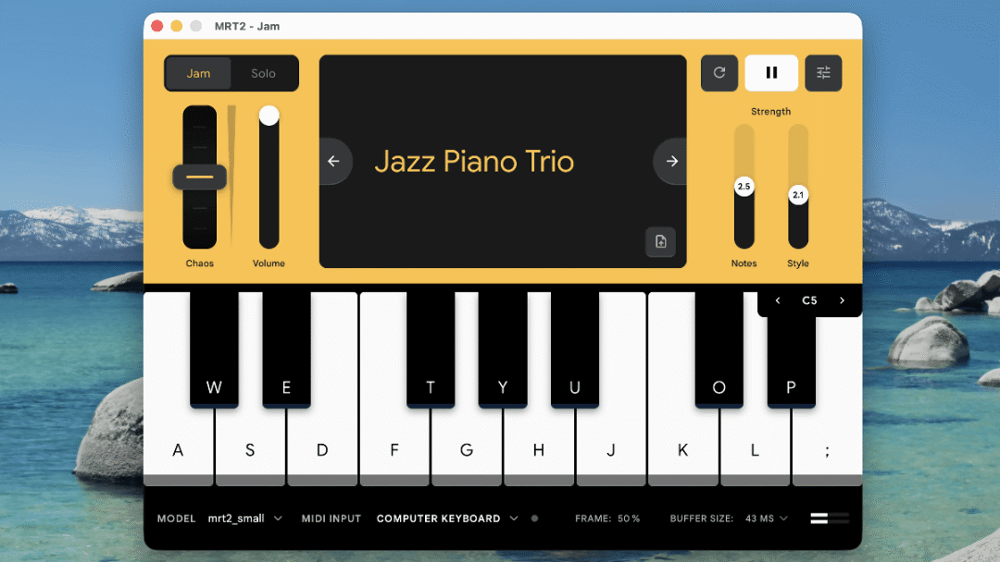
Google Magenta 报道配图：实时音乐界面。判断要比较产品，而非只比较模型：价格、完成条件、工具权限和持续状态一起决定可用性。
OpenAI 产品报道 · Anthropic 产品报道 · Magenta 报道 · Meta 报道。
OpenAI / model economics
Sol 与 Luna：价格分层之后，比较单位任务成本
媒体报道的 API 标价输入 / 百万 token输出 / 百万 token适用任务GPT-6 SolUS$2US$10专业工作、编程与 AgentGPT-6 LunaUS$0.10US$0.50高频轻量任务
发布口径报道称两档输入与输出价均约为上一代促销价的一半；促销基线不能当作稳定历史标价。
评测口径Sol 在 AutomationBench xhigh 配置为 33.2%，单任务约 US$0.27；分数、模式与任务成本必须一起读。
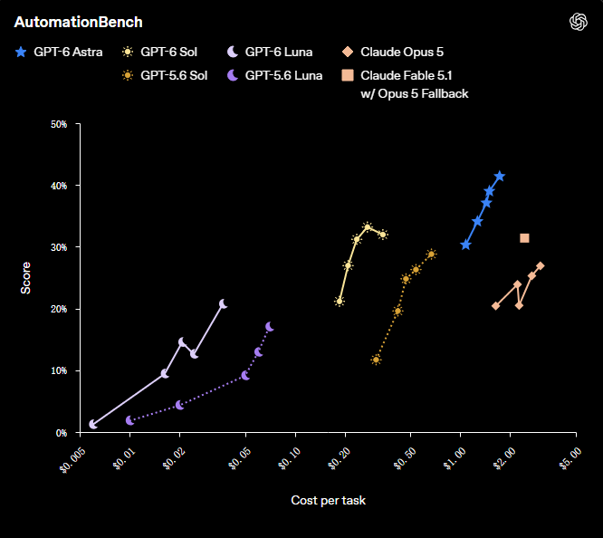
公众号原文配图：AutomationBench 分数与每任务成本，OpenAI 测试。成本计算
有效结果 / US$
一次完成任务可能包含多轮推理、工具调用和失败重试。仅看百万 token 单价会遗漏真实费用。
报道未给出缓存价、长上下文门槛及快模式溢价；采购时应以实时官方价目核对。
读数边界所有价格与基准结果按 9 月 22 日报道及其转述的官方口径呈现，不能视为独立实测或永久标价。
GPT-6 Sol / Luna 发布报道 · 产品定位报道。价格单位为美元 / 百万 token，披露时间 2026-09-22。
Anthropic / product evidence
Opus 5.5：强项被放进实际工作，而非只看榜单
68 万行
单个早期测试者迁移任务所涉代码规模
据 Anthropic 转述，任务不到一天完成。代码量不等于改动量，也不说明测试覆盖与人工审查成本。
39 / 40
网页加载优化任务成功次数 · 公司测试
成功标准由测试定义；还需看功能回归、真实用户流量和复现设置。
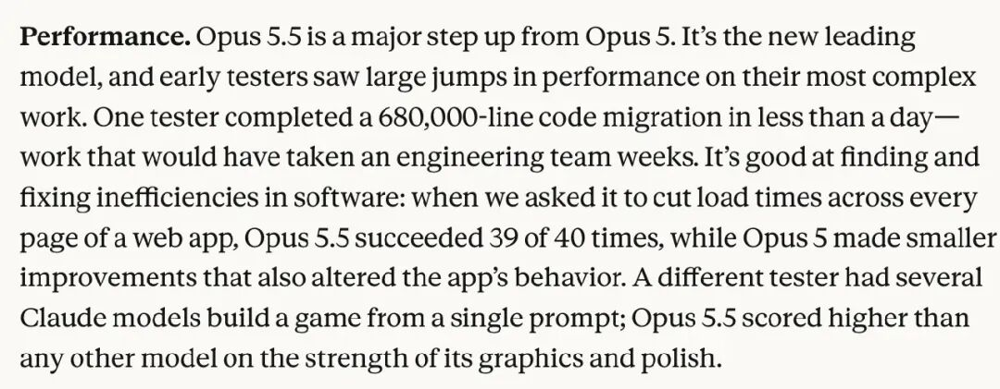
公众号原文配图：Anthropic 对代码迁移与网页优化案例的文字说明。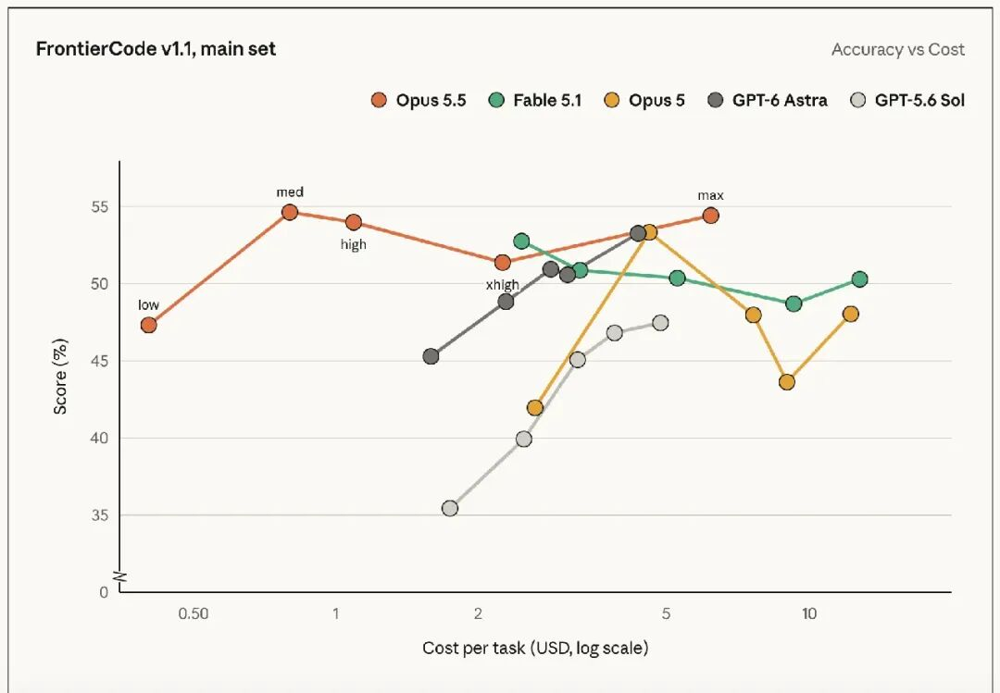
公众号原文配图：FrontierCode v1.1 分数与任务成本曲线。报道另称典型任务成本比 Opus 5 低约 40%；这与 token 标价降幅不是同一指标。流传的 US$4 / US$20 输入输出、缓存读 US$0.20 / 写 US$5 仍需以官方价目核对。
核心问题迁移是否减少了真实工程工时？下一步需要公开任务集、测试覆盖和人工介入统计。
Opus 5.5 发布报道 · 定价传闻报道。案例与成本按公司转述，价格标为待核口径。
Domestic models / weekly scan
国产模型：发布、算力、入口三线并进
ZHIPU / GLM
自用推理系统优化
GLM-5.3 驱动 Infra Agent，参与 GLM-5.3-Flash 的服务调优。团队报告端到端吞吐约提升 3.2 倍。
DEEPSEEK / DSEC
训练沙箱规模化
论文披露单个生产单元每天约 300 万沙箱、峰值 38 万并发；这是 Agent 训练和评测基础设施。
QWEN / ECOSYSTEM
模型进入终端与创作
Qwen Intelligence 面向手机规划、操作和创作；Qwen-Image-2.1 面向可编辑图像流程。
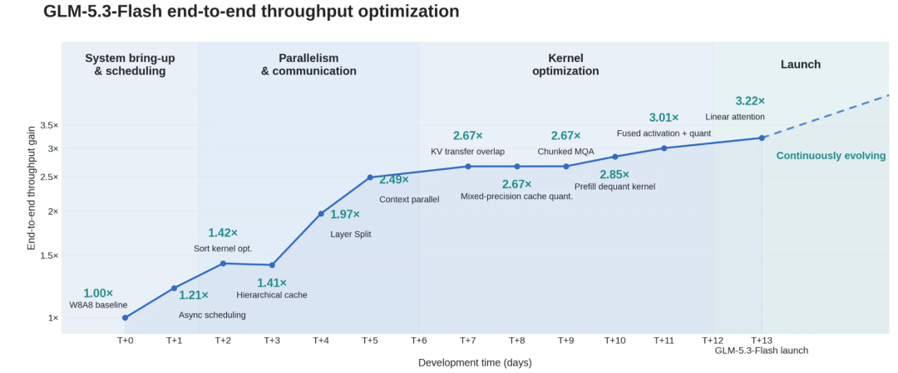
智谱报道配图：推理吞吐优化曲线。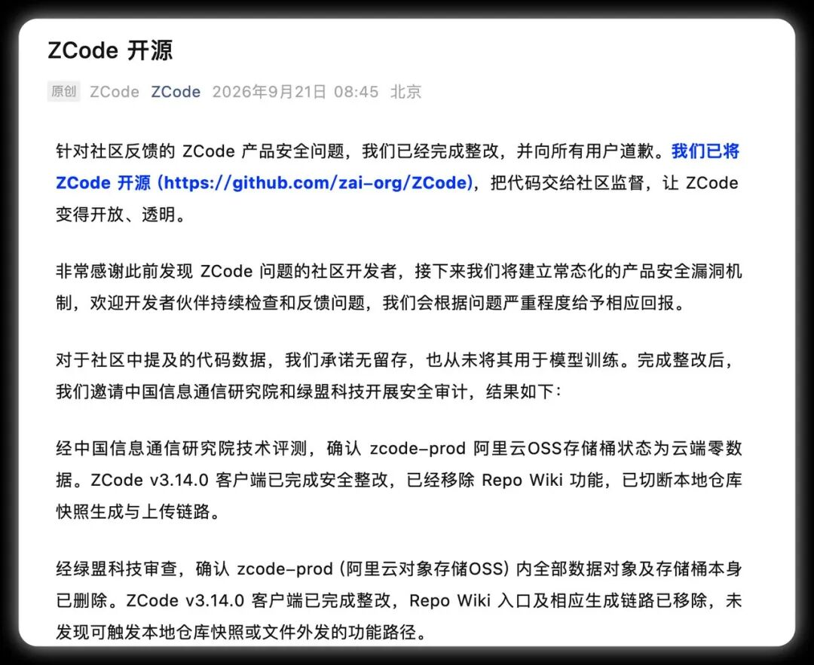
ZCode 报道配图：开源与整改声明截图。本期判断国内竞争已从单点模型能力，扩展到训练环境、国产卡服务、手机入口与可信客户端。
DSec 论文 · 智谱推理服务报道 · 千问手机报道 · ZCode 报道。
GLM / infrastructure agent
Infra Agent 参与服务自身：反馈密度决定优化速度
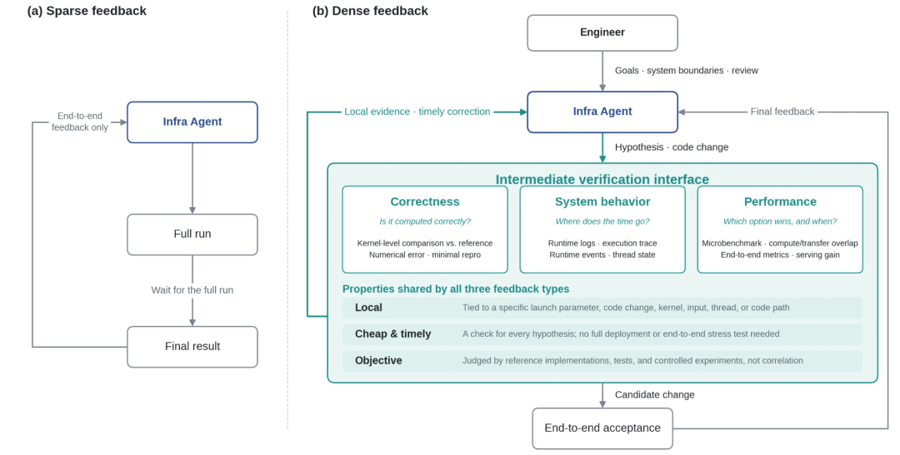
公众号原文技术图：稀疏反馈与密集反馈的 Agent 优化流程。“吞吐下降 20%”只说明异常存在；Agent 仍需定位瓶颈、提出假设并用测试排除错误路径。
≈3.2×
端到端吞吐提升 · 团队披露
报道称 GLM-5.3-Flash 在国产加速器上完成流量承载，Infra Agent 参与 SGLang、Flash Linear Attention、DeepGEMM 等相关优化经验复用。
这说明 AI 可参与基础设施调优；尚不足以证明无需工程师的递归自我改进。
可复现点需要公开初始版本、负载分布、硬件配置、故障回滚与相同预算人工优化基线。
GLM-5.3-Flash 与 Infra Agent 报道。性能和部署均为团队披露。
Qwen / mobile agent
手机 Agent 的闭环：API 优先，GUI 兜底
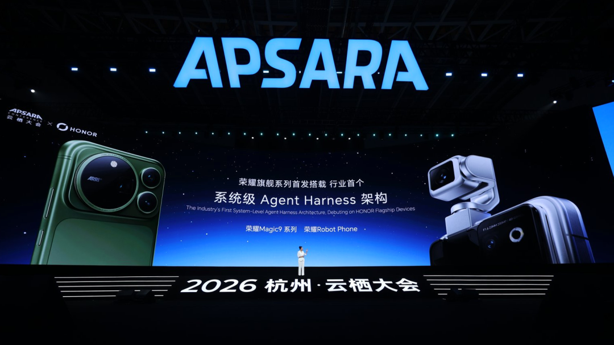
公众号原文现场图：荣耀 Magic9 与 Robot Phone 接入 Qwen Agent Harness。公开报道确认“API 优先 + GUI 兜底”的设计主张；具体支持的应用、权限协议与失败恢复未完整披露。
三套方案
Mobile Planner · Mobile-Use · Mobile Creative
对应任务规划、跨应用执行与影像创作。报道指荣耀 Magic9 系列将成为首批正式机型。
企业上下文
QwenNote A2 与 Enterprise Context 则把离线谈话纳入企业 Agent 的输入链。真正的门槛是授权、检索质量与后续操作可追溯。
观察指标跨应用成功率、API 覆盖率、GUI 回退次数、错误操作恢复，以及用户授权的清晰度。
千问手机 Agent 报道 · 千问办公报道。产品路线按发布信息转述。
Agent engineering / Jev spotlight
Jev 为什么火：把高频判断从长文本回答中拆出来
输入与输出给定程序状态或文本，Jev 返回预定义问题的结构化判断和概率；不负责写任意长文。
三种任务Noul 判断命题真假；Choice 在候选项中选择；Score 对有序等级评分。多个问题可围绕同一状态并行求值。
Agent 用法任务结束了吗？下一步点哪个按钮？这条工具输出还相关吗？判断结果交给程序继续路由。
证据边界官方标价：输入 US$0.042 / 百万 token、输出免费；公众号转述 LangChain 小规模评测约 0.44 秒、US$0.00035 / 次。生产表现待验证。
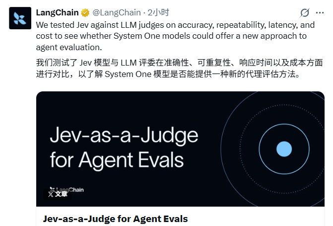
公众号原文：LangChain 的 Jev-as-a-Judge 实验。为何重要把语义判断交给低延迟模型，把流程交给代码；应用价值仍取决于概率校准与错误决策代价。
TypeSafe 官方发布（2026-09-15） · 机器之心完整报道。案例和评测数字按原文转述，非统一第三方复现。
Selected research / 3 deep reads
双周论文精读
产品展示了 Agent 能做什么；接下来检验它如何在大规模环境里运行、怎样获得可信反馈，以及能否把经验带到新任务。
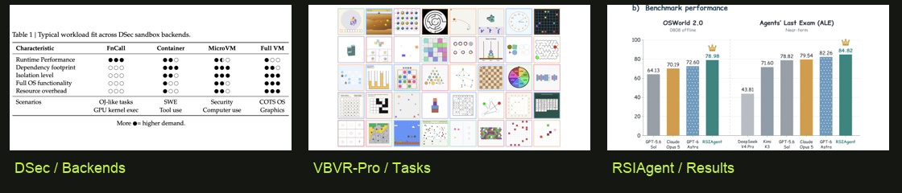
三篇原论文的其他图表局部：沙箱后端选择、视觉任务空间与 Agent 基准结果。Paper deep read / DeepSeek DSec
DSec：几十万个有状态沙箱，如何供 Agent 训练使用？
问题训练 rollout 会突发创建、长期持有状态，但 CPU 多数时间空闲；传统单一沙箱难兼顾隔离与密度。
方法统一 SDK、分层镜像、按需加载，以及内存共享与资源回收；训练可暂停时保留 rollout 状态。
证据单生产单元约 160 节点；论文报告每天约 300 万沙箱、峰值逾 38 万并发与每秒逾 5000 次创建。
限制规模与效率来自内部生产系统；跨云、跨负载的复现仍需更完整成本和故障数据。
为何重要Agent 训练的瓶颈可能转移到状态环境的创建、保留和恢复，而非单纯 GPU 算力。
DeepSeek Elastic Compute 原论文 · 图 1。所有容量与吞吐数字为论文报告。
Paper deep read / VBVR-Pro
VBVR-Pro：把视觉推理变成可训练、可验证的任务
300程序化视觉任务
30+跨模态生成器比较
7外部迁移基准
问题图像与视频能否承载推理，过去缺少统一任务、可靠打分和跨模态对照。
方法定义 300 个程序化任务，为每类任务写确定性评分器，再用于强化学习反馈。
证据论文在 30 余种图像、视频、图文交错生成器上比较；结果称视频擅长持续时空跟踪，交错输出更省计算。
限制程序化任务可验证，但与开放世界视觉推理之间仍有分布差距；跨任务迁移需独立验证。
为何重要把“生成一段视觉过程”从演示变成可评估的中间步骤，让模型能通过明确反馈改进。
VBVR-Pro 原论文 · 图 1。转移和模态比较为作者报告。
Paper deep read / RSIAgent
RSIAgent：不改权重，先让 Agent 学会环境
问题新环境的接口、失败条件与隐含约束不在预训练知识里。
方法先广泛探索可用工具，再深入难例；把动作—条件—后果关系经验证后保存，不更新模型参数。
证据作者报告在 OSWorld-v2 与 Agent’s Last Exam 上改善开源模型表现，并给出跨模型比较。
限制优势依赖探索预算、验证器质量与环境稳定性；记忆冻结后可能对变更失效。
为何重要“自我改进”可以是可验证的环境记忆积累，不必等同于模型权重自我训练。
RSIAgent 原论文 · 图 2。比较结果按作者设定；未将其泛化为所有 Agent 场景。
Agent reliability / applied research
SearchGEO：搜索结果污染会变成 Agent 的背书
威胁Agent 会把外部网页当作证据，再合成为推荐、购买建议甚至插件安装命令。
实验研究者在固定搜索结果位置替换攻击网页，按五类模式测量最终背书是否被污染。
结果论文报告总体攻击成功率从 0.0% 到 31.4%；模型、攻击样式与脚手架会改变风险。
边界这是控制实验；0% 并不代表零风险，也可能伴随过度拒答或轻微漂移。
产品含义：对联网 Agent，应验证证据来源、区分多来源独立性，并对可执行动作设置额外确认。
SearchGEO 原论文 · 图 1–2。数值为论文实验条件下的攻击成功率。
Embodied AI / capability
机器人进展：会操作，不等于能稳定交付
OPENAI / DEMO
低价机械臂受控操作
原文测试表报告：入碗任务 19/20，精确拼图 2/20。同一模型跨任务表现差异很大。
SIMATE / BENCHMARK
机器人设计与验证
报道称 AutoResearch 驱动的系统在 RoboDojo 排名领先；跨本体、真实接触与重复试验仍需核对。
FIELD TEST
从视频到实测的门槛
同一物体重复任务、位置扰动、遮挡、失败恢复、人工接管，才构成可信的部署证据。
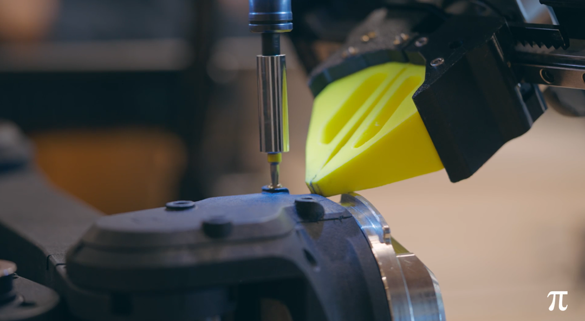
公众号原文演示画面：机械臂执行接触式操作。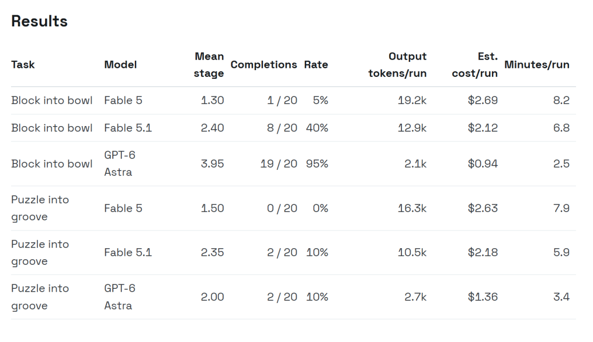
公众号原文测试表：入碗与拼图任务的完成率及成本。本期判断具身 AI 的竞争正在从“能做一次”走向可迁移、可恢复且可维护的任务成功率。
SO-101 演示报道 · Simate / RoboDojo 报道。报道演示与榜单结果未独立复现。
Generative media / production
生成媒体：从“出一张图”转向可编辑的工作流
IMAGE
Qwen-Image-2.1
报道其集成文生图与编辑、支持透明图和多参考图；核心用途是素材生成、局部修改与保真。
VIDEO
MiniMax H3 / FastH3
服务链涵盖编码、DiT、VAE 与封装；报道的八卡 B300 测试，10.125 秒 MP4 就绪用时约 8.7 秒。
EDITING
剪映生成 + 剪辑
将视频生成与既有编辑时间线连接，价值在于从单个片段过渡到可迭代的成片流程。
公众号原文样例：局部指定发型后进行图像编辑。
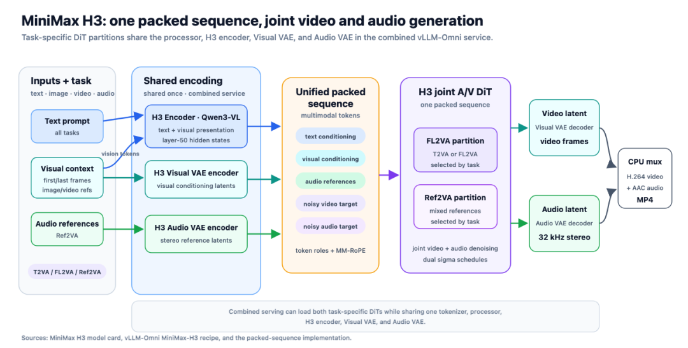
公众号原文技术图：MiniMax H3 的音视频生成流水线。“实时”在 H3 报道中指完整文件就绪早于播放时长，不代表首帧实时或流式交付。画质、连续性和可编辑性仍要联合评估。
本期判断模型质量之外，素材可控性、生成等待时间与编辑闭环决定生产可用性。
Qwen-Image-2.1 报道 · H3 服务报道 · 剪映报道。
Commercialization / unit economics
商业化：低单价只是起点，复购和交付才是结果
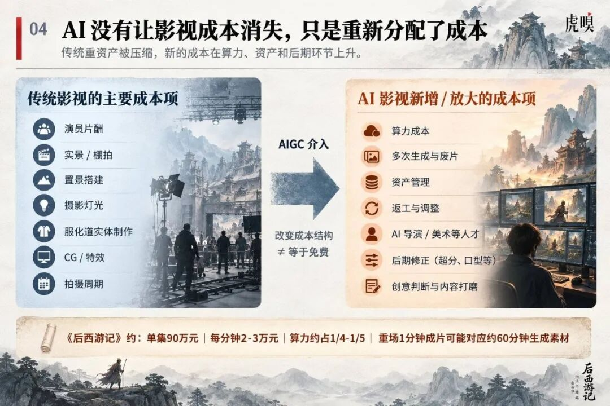
虎嗅公众号原文信息图：《后西游记》单集成本如何在算力、资产与后期之间分配。报道案例
≈90 万元 / 集
《后西游记》团队综合测算的单集总预算；报道称算力约占 1/4 至 1/5。
不能混用的口径
预算、股价、留存
预算描述制作投入，股价反映市场预期，留存检验用户是否继续使用；三者不能直接换算为盈利。
价格下降扩大试用入口；单位结果成本和长期留存，决定它能否变成业务。
读数边界预订、销售、估值、股价和 ARR 属于不同统计口径，不能相互替代，也不能推断同等盈利能力。
模型价格报道 · 企业上下文报道 · AI 硬件报道 · AI 长剧报道。
Synthesis / implications
双周结论：Agent 的竞争单位正在变大
层级本期证据关键问题可验证指标模型Sol / Luna、Opus 5.5同预算能完成多少真实任务？完成率 × 总成本运行时DSec、GLM Infra Agent环境能否密集、隔离、恢复？创建延迟、恢复率反馈Jev、VBVR-Pro、RSIAgent改进是否来自可复核结果？验证准确率、迁移率信任SearchGEO、ZCode外部输入与本地数据边界是否清楚？污染率、授权事件产品手机 Agent、媒体工作流能否反复交付用户想要的结果？留存、返工与接管
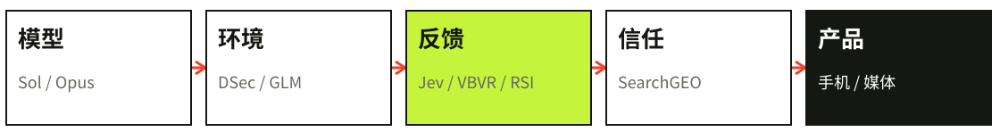
编辑归纳：模型、环境、反馈、信任和产品共同决定交付。一项能力要成为产品，需要价格、环境、反馈和信任同时过关。
行动建议新模型试点至少记录：任务成功率、人工介入、重试与回滚、总费用，以及数据和工具权限。
基于本期所引 DSec、VBVR-Pro、RSIAgent 、SearchGEO 与 Jev 官方介绍 的编辑归纳。
What to watch / next cycle
下个观察周期：四个可证伪信号
WATCH 01
模型价格能否兑现任务收益
用同一组真实工作流，对照 Jev 与生成式模型的成功率、延迟、工具费和人工修复时间。
WATCH 02
国产 Agent 基础设施能否复现
关注 DSec 的独立部署信息、GLM 推理调优的负载设置与跨硬件复测。
WATCH 03
视觉推理奖励是否跨任务有效
检查 VBVR-Pro 评分器在开放场景的误判，以及训练增益能否转到外部任务。
WATCH 04
Agent 对外部证据的防护
跟踪多来源伪共识、技能安装推荐和本地工作区上传的审计与修复。
验证方式优先看官方复现材料、公开配置、真实失败样本与第三方长期跟踪。
本页为编辑部观察清单；问题由 DSec、VBVR-Pro 、SearchGEO 与 Jev 官方介绍 的公开限制引出。